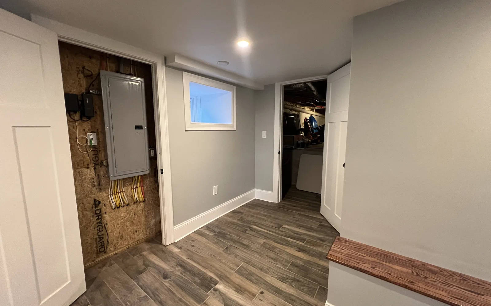
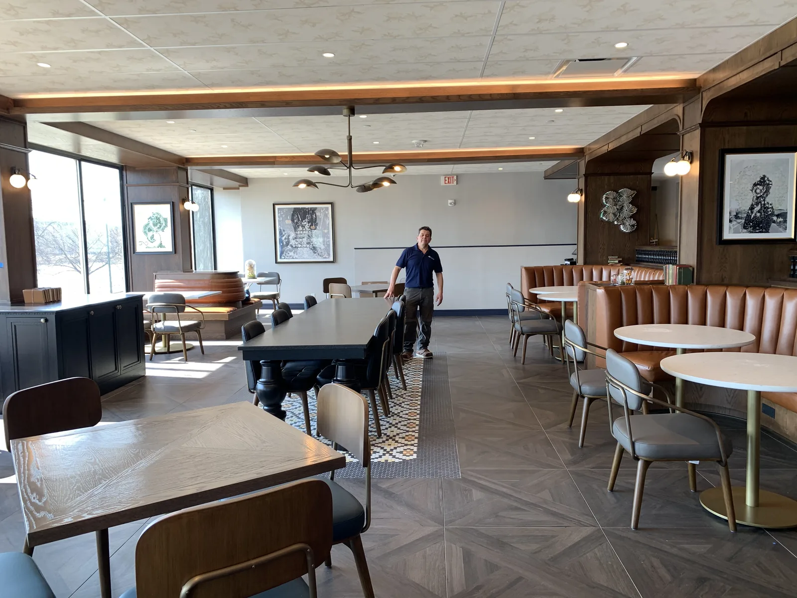
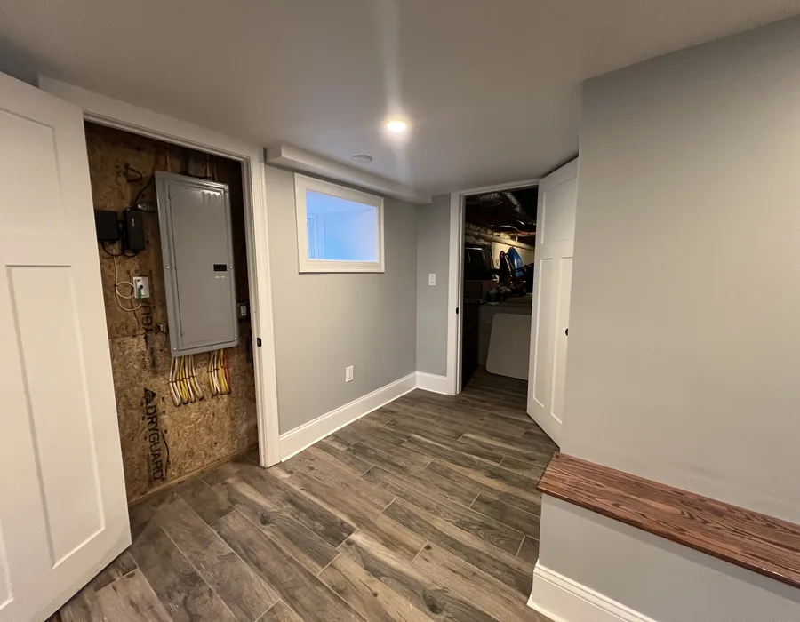

Wakefield commercial remodeling contractors
Wakefield commercial remodeling contractors for business spaces that need coordination
Commercial remodeling in Wakefield needs a contractor who can respect the business around the project. DeFaria Construction focuses on scope, access, schedule and communication before work begins.
Our work
A real DeFaria commercial build-out
From open ceilings and framing to finished custom carpentry, on a real commercial interior. Planning a project in Wakefield? Start with a free estimate.
Get a Free Estimate
Local search focus
Commercial remodeling has to work around the business, not just the building.
Wakefield commercial remodeling can involve offices, service spaces and local storefronts where a clear scope helps avoid disruption for staff, customers and neighboring businesses. The estimate should reflect access, customer flow, schedule windows and which areas need to stay usable during the project.
This page supports commercial remodeling searches around Greenwood, Montrose, Wakefield Junction, Lakeside, Downtown Wakefield, West Side. It gives business owners a clearer path than a general commercial projects page.
- Clear estimate conversations before the project starts.
- Direct communication with homeowners and business owners.
- Local coverage across Essex County and Middlesex County.
Wakefield is a strong bridge into Middlesex County because the search intent can be residential, lake-area, commuter-town or local storefront. The page should feel different from Woburn by speaking to established neighborhoods, Lakeside considerations, Greenwood and Montrose homeowners, and the need for clear planning before a project affects daily routines.
For Wakefield commercial remodeling, the page should talk to local offices, service businesses and storefronts that need a defined scope, limited disruption and a contractor who understands staff, customer and neighboring-business flow.
Wakefield neighborhood planning note: Greenwood, Montrose, Wakefield Junction, Lakeside and Downtown Wakefield, West Side do not all create the same project conditions. A useful page should help the visitor think about access, parking, existing structure, privacy, daily use and whether the project is a targeted update or a larger scope conversation.
Residential context for Wakefield: Wakefield homes often need remodeling that respects established layouts, lake-area access, older finishes and the owner choice between targeted updates and broader interior work. A Wakefield addition should connect the new square footage to the way the home is used, especially when access, driveway layout, privacy or roofline transitions affect the plan.
Commercial and outdoor context for Wakefield: Wakefield commercial remodeling can involve offices, service spaces and local storefronts where a clear scope helps avoid disruption for staff, customers and neighboring businesses. Wakefield deck work should account for outdoor use near wooded or lake-area settings, stairs, railings, privacy and how the deck connects to the main living space.
Areas covered
A Wakefield commercial page should be specific enough to help the owner decide.
This page supports Wakefield commercial remodeling contractors searches and related local intent. It gives visitors enough context to decide whether DeFaria Construction is relevant before they call.
- Greenwood
- Montrose
- Wakefield Junction
- Lakeside
- Downtown Wakefield
- West Side
Project photos
Commercial project photos for Wakefield businesses
Commercial visitors need to see that the work can support business use, not just a generic construction claim.



Experience
Why this page is built for real visitors, not just keywords.
DeFaria Construction is a local construction and remodeling company serving homeowners and business owners in Massachusetts. The company records show direct owner involvement from Luiz DeFaria and BBB credibility as part of the trust stack, so the page is written around project clarity, service area fit and practical next steps instead of repeating a city name without value.
The goal is to help someone searching for Wakefield commercial remodeling contractors understand the type of work, the local areas covered and how to start a direct conversation with the contractor before requesting an estimate.
Request an estimateFAQ
Common questions about Wakefield commercial remodeling contractors
What commercial remodeling work can DeFaria Construction support in Wakefield?
DeFaria Construction can support commercial improvements, office updates, storefront work and interior remodeling where the owner needs a clear scope and organized execution.
Can commercial remodeling be planned around business activity?
Yes. The planning conversation should cover access, schedule, safety, customer flow and any areas that need to stay usable during the project.
Why make a Wakefield commercial remodeling page?
Commercial searches are local and specific. A Wakefield page gives business owners a clearer path than a broad service page.